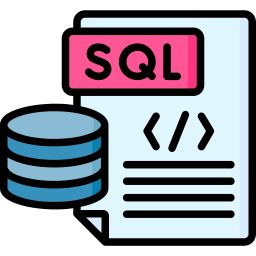

Linguagens de Programação
Nessa página vou mostrar para vocês algumas linguagens de Programação acordo e a área que estão relacionadas.
Mas, antes de mostrar as linguagens para você, afinal de contas o que é uma linguagem de programação?
Uma linguagem de programação é um conjunto de regras, palavras e símbolos usado por humanos para dar instruções precisas a um computador. Serve para: Criar softwares: Permite desenvolver aplicativos de celular, páginas de internet e sistemas operacionais. Controlar máquinas: Ajuda a operar dispositivos modernos, como carros inteligentes e eletrodomésticos. Automatizar tarefas: Transforma ideias e cálculos em comandos lógicos que a máquina executa sem errar.
Linguagens de Programação e suas Áreas
JavaScript
JavaScript (ou JS) é uma linguagem de programação que adiciona interatividade, dinamismo e lógica às aplicações web. Junto com HTML e CSS, forma a principal base tecnológica do desenvolvimento web moderno.
Para que serve o JavaScript?
Desenvolvimento Web (Front-end): Cria menus dinâmicos, animações, formulários interativos, atualizações de conteúdo e diversas funcionalidades.
Sistemas e Servidores (Back-end): Com tecnologias como Node.js, permite desenvolver servidores, APIs e sistemas completos.
Aplicativos: Pode ser utilizado em tecnologias como React Native para desenvolvimento de aplicações móveis.
Jogos e aplicações interativas: Pode ser utilizado para criar jogos e experiências interativas diretamente no navegador.
Automação e ferramentas: Também pode ser usado para scripts, automações e ferramentas de desenvolvimento.
Suas principais áreas de aplicação:
Desenvolvimento de Software e Aplicações, principalmente Desenvolvimento Web, Front-end e Back-end.
HTML
HTML (HyperText Markup Language) é a linguagem de marcação responsável por estruturar o conteúdo de páginas e aplicações web. Ele define elementos como títulos, textos, imagens, links, formulários, tabelas e vídeos. Junto com CSS e JavaScript, forma a base do desenvolvimento web.
Para que serve o HTML?
Estrutura de páginas web: Organiza textos, imagens, vídeos, links e outros elementos de um site.
Criação de interfaces: Define a estrutura visual que posteriormente será estilizada pelo CSS e tornada interativa pelo JavaScript.
Aplicações web: É utilizado na construção da interface de sistemas e aplicações acessados pelo navegador.
Formulários: Permite criar campos para login, cadastro, pesquisas e envio de informações.
Suas principais áreas de aplicação:
Desenvolvimento de Software e Aplicações, especialmente Desenvolvimento Web e Front-end.
CSS
CSS (Cascading Style Sheets) é a tecnologia responsável pela aparência e apresentação das páginas web.
Enquanto o HTML define a estrutura, o CSS determina como os elementos serão exibidos, incluindo cores, fontes, tamanhos, espaçamentos, animações e organização da página.
Para que serve o CSS?
Estilização de sites: Define cores, fontes, bordas, tamanhos e outros aspectos visuais.
Layouts: Permite organizar elementos da página utilizando recursos como Flexbox e Grid.
Design responsivo: Faz com que sites se adaptem a computadores, celulares e tablets.
Animações e efeitos: Permite criar transições, animações e diversos efeitos visuais.
Suas principais áreas de aplicação:
Desenvolvimento de Software e Aplicações, principalmente Desenvolvimento Web e Front-end.
Java
Java é uma linguagem de programação conhecida por sua portabilidade, estabilidade e ampla utilização em sistemas de grande escala. É muito utilizada no desenvolvimento de sistemas empresariais, aplicações de servidores e serviços que precisam funcionar de maneira confiável em diferentes ambientes.
Para que serve o Java?
Sistemas empresariais: É utilizado em bancos, empresas e grandes organizações para desenvolver sistemas complexos.
Back-end: É muito utilizado para criar servidores, APIs e aplicações que processam grandes quantidades de informações.
Aplicações distribuídas: Pode ser utilizado em sistemas que funcionam em diversos servidores e máquinas.
Aplicativos Android: Historicamente teve um papel muito importante no desenvolvimento Android, embora atualmente Kotlin também tenha grande destaque.
Cloud Computing: É utilizado na criação de aplicações que funcionam em ambientes de computação em nuvem.
Suas principais áreas de aplicação:
Desenvolvimento de Software e Aplicações, Cloud Computing e DevOps, além de aplicações relacionadas a Dados e sistemas corporativos.
Python
Python é uma linguagem de programação conhecida por sua sintaxe relativamente simples, grande quantidade de bibliotecas e enorme variedade de aplicações. É uma das principais linguagens utilizadas atualmente em Inteligência Artificial, Machine Learning, Ciência de Dados e automação.
Para que serve o Python?
Inteligência Artificial e Machine Learning: É uma das principais linguagens para desenvolver modelos de IA e Machine Learning.
Data Science: É amplamente utilizada para análise, tratamento e visualização de dados.
Cibersegurança: Pode ser utilizada para automação, análise de sistemas, criação de ferramentas e testes de segurança.
Back-end: Frameworks como Django e Flask permitem desenvolver sites, sistemas e APIs.
Cloud e DevOps: É bastante utilizada para automação de infraestrutura, scripts e ferramentas de gerenciamento.
Automação: Permite automatizar tarefas repetitivas e processos.
Suas principais áreas de aplicação:
Inteligência Artificial e Machine Learning, Dados — Data Science & Analytics, Segurança da Informação/Cibersegurança, Desenvolvimento de Software e Aplicações e Cloud Computing e DevOps.
C e suas derivadas
C / C++ / C#
C, C++ e C# são linguagens da família C, mas possuem características e aplicações diferentes. C e C++ são conhecidas pelo alto desempenho e pelo maior controle sobre recursos do computador, enquanto C# é muito utilizada no desenvolvimento de aplicações dentro do ecossistema Microsoft e em jogos.
Para que servem?
Sistemas e aplicações de alto desempenho: C e C++ são utilizadas quando desempenho e controle dos recursos do computador são importantes.
Sistemas embarcados: C e C++ são muito utilizadas em dispositivos eletrônicos, equipamentos industriais e sistemas embarcados.
Cibersegurança: Conhecimentos em C e C++ são importantes para compreender vulnerabilidades, sistemas operacionais e funcionamento de baixo nível.
Redes e telecomunicações: C e C++ podem ser utilizadas no desenvolvimento de softwares e componentes de infraestrutura de rede.
Desenvolvimento de jogos: C++ possui forte presença na indústria de jogos, enquanto C# é muito utilizada com engines como Unity.
Aplicações empresariais: C# é amplamente utilizada para desenvolver sistemas, APIs e aplicações empresariais.
Suas principais áreas de aplicação:
Desenvolvimento de Software e Aplicações, Segurança da Informação/Cibersegurança e Infraestrutura de Redes e Telecomunicações.

SQL
SQL (Structured Query Language) é a linguagem utilizada para trabalhar com bancos de dados relacionais. Ela permite armazenar, consultar, modificar e organizar grandes quantidades de informações.
Para que serve o SQL?
Bancos de dados: Permite criar e administrar estruturas para armazenamento de informações.
Data Science: É utilizado para buscar e organizar dados que posteriormente serão analisados.
Data Analytics: Permite consultar grandes conjuntos de dados e gerar informações para análise.
Desenvolvimento de sistemas: Aplicações utilizam SQL para armazenar informações de usuários, produtos, pedidos, pagamentos e outros dados.
Business Intelligence: É utilizado para extrair informações de bancos de dados para apoiar análises e relatórios.
Suas principais áreas de aplicação:
Dados — Data Science & Analytics e Desenvolvimento de Software e Aplicações.
PHP
PHP é uma linguagem de programação voltada principalmente para o desenvolvimento web no lado do servidor (back-end). Ela pode gerar páginas dinamicamente, processar informações e conectar aplicações a bancos de dados.
Para que serve o PHP?
Desenvolvimento Web: É utilizado para criar sites e aplicações web dinâmicas.
Back-end: Permite desenvolver a lógica que funciona no servidor.
Bancos de dados: Pode trabalhar com bancos de dados para armazenar e consultar informações.
Sistemas de gerenciamento de conteúdo: É uma tecnologia historicamente muito importante para plataformas como WordPress.
APIs e sistemas web: Pode ser utilizado para desenvolver serviços e sistemas acessados pela internet.
Suas principais áreas de aplicação:
Desenvolvimento de Software e Aplicações, principalmente Desenvolvimento Web e Back-end.